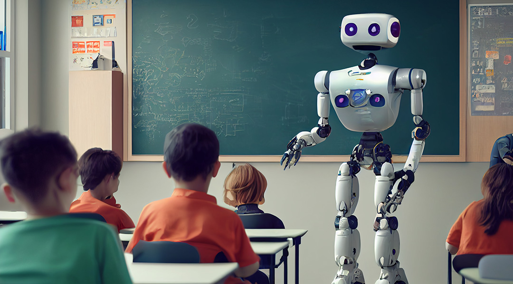

Actu :
LES NOTES EN CLASSE REMPLACÉES PAR DES ÉVALUATIONS FAITES PAR IA DÈS LA RENTREE PROCHAINE DANS TOUTES LES ÉCOLES DE FRANCE !

"Avec cette IA, nous garantissons une évaluation équitable pour tous nos élèves." C'est ce qu'a annoncé ce week-end le gouvernement à la suite du rassemblement du 21 Novembre 2024.
Dans un discours marquant et soutenu par une grande majorité des députés, la ministre de l'Éducation nationale a dévoilé une nouvelle initiative qui pourrait bien transformer le paysage de l'éducation en France. Le gouvernement a confirmé l’introduction imminente d’une intelligence artificielle (IA) destinée à réformer le système d’évaluation scolaire. Selon les autorités, cette technologie permettra de garantir une évaluation plus juste et impartiale des élèves, en remplaçant progressivement les méthodes traditionnelles de notation.
La ministre a précisé que l'IA sera capable d'analyser en temps réel les performances des élèves, non seulement à travers leurs résultats aux devoirs et examens, mais aussi par une évaluation continue de leur participation en classe, de leur interaction avec le matériel pédagogique et de leur comportement. En somme, cette IA devrait prendre en compte une série de critères considérés comme plus représentatifs des capacités globales de chaque étudiant, bien au-delà de la simple note d’un devoir.
"L’objectif est simple : offrir à chaque élève une évaluation qui reflète de manière plus complète et équitable ses compétences réelles, indépendamment des biais humains qui peuvent parfois influencer le jugement d’un professeur" , a déclaré le ministre. Il a ajouté que cette initiative s’inscrit dans une démarche globale visant à "moderniser l'éducation" tout en répondant aux enjeux de la diversité scolaire et de la lutte contre les inégalités.
L'intelligence artificielle, selon les partisans de cette réforme, permettra de réduire les discriminations liées à des facteurs externes, tels que l'origine sociale, le sexe, ou même la personnalité des enseignants. Par exemple, l’IA pourrait identifier des comportements systématiquement sous-évalués par certains enseignants et corriger ces biais, en offrant une vision objective et factuelle des progrès de chaque élève.
Les partisans de cette réforme soulignent également la transparence du système, grâce à l'algorithme qui sera accessible aux élèves et à leurs parents. Ainsi, les élèves pourront suivre leur évolution en temps réel, comprendre les critères qui influencent leurs résultats et recevoir des retours personnalisés qui les aideront à progresser.
Cependant, l'annonce n'a pas manqué de soulever des interrogations, tant chez les enseignants que dans la société civile. Nombreux sont ceux qui se demandent si une machine, même aussi avancée soit-elle, pourra réellement appréhender la complexité des compétences humaines, notamment dans des matières comme les arts ou les langues vivantes, où la subjectivité des évaluations joue un rôle important. Certains critiques redoutent également que cette nouvelle approche ne conduise à une déshumanisation de l'éducation, avec un risque de standardisation excessive des évaluations.

De plus, la question de la protection des données personnelles des élèves a été soulevée. Bien que le gouvernement assure que toutes les données collectées seront strictement anonymisées et utilisées uniquement pour les évaluations, des inquiétudes persistent quant à la sécurité de ces informations et leur utilisation future.
Quoi qu'il en soit, cette méthode d'évaluation grâce à l'IA a déja été testée dans plus de 20 écoles, collèges et lycées dans toutes la France métropolitaine et d'outre-mer et est prévue pour tout le monde dès la rentrée 2025-2026 selon le gouvernement.
Les Réactions :
Bien entendu cette annonce a fait réagir plus d'une personne, des interviews ont été diffusées sur notre chaine d'info InfoMax et voici le replay du passage :